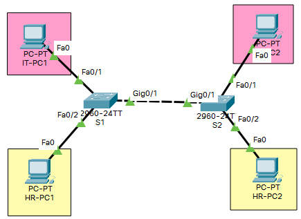

AIM
- Configure Basic Settings
- Configure & Verify VLANs
- Configure Trunks
TOPOLOGY

VLAN TABLE
| VLAN ID |
VLAN Name |
Network Address |
Subnet Mask |
Ports to be assigned |
| 10 |
IT |
192.168.10.0 |
255.255.255.0 |
S1: Fa0/1 |
| S2: Fa0/1 |
| 20 |
HR |
192.168.20.0 |
255.255.255.0 |
S1: Fa0/2 |
| S2: Fa0/2 |
| 99 |
Native |
S1: G0/1 |
| S2: G0/1 |
ADDRESSING TABLE
| Device |
Interface |
IP Address |
Subnet Mask |
Description |
| IT-PC1 |
NIC |
192.168.10.10 |
255.255.255.0 |
Connected to S1 Fa0/1 |
| IT-PC2 |
NIC |
192.168.10.11 |
255.255.255.0 |
Connected to S2 Fa0/1 |
| HR-PC1 |
NIC |
192.168.20.10 |
255.255.255.0 |
Connected to S1 Fa0/2 |
| HR-PC2 |
NIC |
192.168.20.11 |
255.255.255.0 |
Connected to S2 Fa0/2 |
S1 CONFIGURATION
Switch>enable
Switch#conf t
Switch(config)#hostname S1
S1(config)#vlan 10
S1(config-vlan)#name IT
S1(config-vlan)#vlan 20
S1(config-vlan)#name HR
S1(config-vlan)#vlan 99
S1(config-vlan)#name Native
S1(config-vlan)#interface fa0/1
S1(config-if-range)#switchport mode access
S1(config-if-range)#switchport access vlan 10
S1(config-if-range)#interface fa0/2
S1(config-if-range)#switchport mode access
S1(config-if-range)#switchport access vlan 20
S1(config-if-range)#interface GigabitEthernet0/1
S1(config-if)#switchport mode trunk
S1(config-if)#switchport trunk native vlan 99
S1(config-if)#end
S1#copy run start
S2 CONFIGURATION
Switch>enable
Switch#conf t
Switch(config)#hostname S2
S2(config)#vlan 10
S2(config-vlan)#name IT
S2(config-vlan)#vlan 20
S2(config-vlan)#name HR
S2(config-vlan)#vlan 99
S2(config-vlan)#name Native
S2(config-vlan)#interface fa0/1
S2(config-if-range)#switchport mode access
S2(config-if-range)#switchport access vlan 10
S2(config-if-range)#interface fa0/2
S2(config-if-range)#switchport mode access
S2(config-if-range)#switchport access vlan 20
S2(config-if-range)#interface GigabitEthernet0/1
S2(config-if)#switchport mode trunk
S2(config-if)#switchport trunk native vlan 99
S2(config-if)#end
S2#copy run start
IT-PC1 IP CONFIGURATION
IPv4 Address: 192.168.10.10
Subnet Mask: 255.255.255.0
IT-PC2 IP CONFIGURATION
IPv4 Address: 192.168.10.11
Subnet Mask: 255.255.255.0
HR-PC1 IP CONFIGURATION
IPv4 Address: 192.168.20.10
Subnet Mask: 255.255.255.0
HR-PC2 IP CONFIGURATION
IPv4 Address: 192.168.20.11
Subnet Mask: 255.255.255.0
SHOW COMMANDS USED
Show vlan brief
Show interfaces trunk
Show running-config
PING RESULT
| Ping from |
To |
Destination IP |
Succeeded Yes/No |
| IT-PC1 |
IT-PC2 |
192.168.10.11 |
Yes |
| HR-PC1 |
192.168.20.10 |
No |
| HR-PC2 |
192.168.20.11 |
No |
| HR-PC1 |
IT-PC1 |
192.168.10.10 |
No |
| IT-PC2 |
192.168.10.11 |
No |
| HR-PC2 |
192.168.20.11 |
Yes |
RESULT
Verified and created VLANs and Trunks successfully.